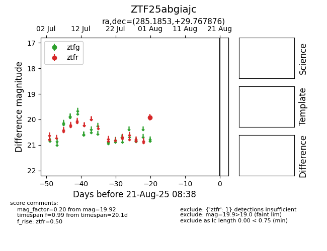

Target ZTF25abgiajc at 2025-08-21 08:38, see:
FINK: fink-portal.org/ZTF25abgiajc
Lasair: lasair-ztf.lsst.ac.uk/objects/ZTF25abgiajc
ALeRCE: alerce.online/object/ZTF25abgiajc
alt names
ZTF25abgiajc (ztf,alerce)
coordinates:
equatorial (ra, dec) = (285.1853,+29.76788)
galactic (l, b) = (60.7650,+11.24697)
photometry
last ztfr=19.92
1 ztfr detections
